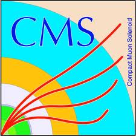
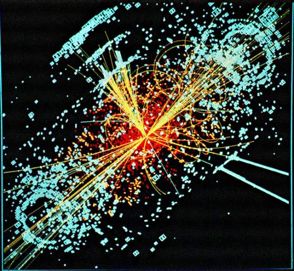

Author: Darren Burton <br> 
<script language="Javascript"> 
 document.write("Last Modified: " + document.lastModified + ""); 
 </script> 
 <br><br><br><br><br><br><br> 
<center>
 <p> 
 <font size="20"> -- RA1 Data/MC plot webpage -- </font>
 </p></center>
<br>
<center></center><br><br><br><br> 
<font size="5"> Choose Plot Category: </font>

<center><a href="./Had_plots_10_May_12/AlphaT_all_275_325.html"><font size = "6">    Had</font></a><font size = "6">     |   </font>  <a href="./DiMuon_plots_10_May_12/MT__all_275_325.html"><font size = "6">    DiMuon</font></a><font size = "6">     |   </font>  <a href="./OneMuon_plots_10_May_12/MHT_all_375_upwards.html"><font size = "6">    OneMuon</font></a><font size = "6">     |   </font>  </center><br><br><br><br> 
<font style="italics" size="3"> NB: Each Plot is available in .pdf and .C. Simply change .png extension in address bar to relevant format </font>